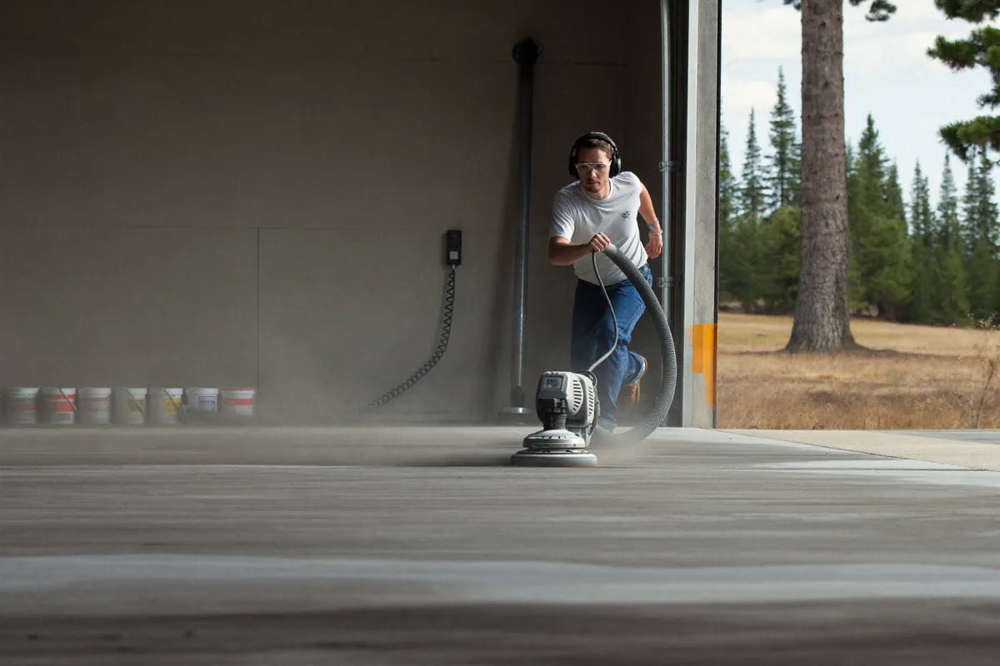

Decorative and metallic epoxy flooring turns a garage, basement, or showroom floor into a visible feature instead of a plain background surface. We install both color-flake systems and hand-applied metallic pigment finishes for Spokane Valley homes and small businesses.

The prep work is identical to a standard floor — diamond grinding, crack repair, and a moisture-tolerant primer. The difference is in the base coat: for color-flake, we broadcast vinyl chips into the wet epoxy for texture and pattern; for metallic, we hand-work mica pigments into the base coat with brushes, squeegees, and sometimes a heat gun to create movement and depth before sealing it under a clear topcoat.
This is the right call for showroom-style garages, finished basements used as living space, home bars, or any small business floor where appearance matters as much as durability. It is also popular for buyers wanting their Spokane Valley home's garage to stand out during a sale.
A solid color floor is functional but flat. Color flake hides minor imperfections and small debris better day to day, which matters in a working garage. Metallic finishes create genuine visual depth — no two metallic floors look identical, since the pigment movement happens by hand during application, which is part of the appeal for homeowners wanting a one-of-a-kind result.
Color-flake systems typically add a modest premium over a solid-color floor, mainly in material cost. Metallic finishes cost more, since they require more skilled hand-application time per square foot and additional material layers. The total project cost still starts from the same $4 to $10 per square foot base range, with decorative work landing toward the upper end.
Color flake is the better choice for a durable, low-maintenance garage or shop floor that still looks upgraded from solid color — it is more forgiving of dirt and tire marks day to day. Metallic is the better choice when the floor is a design feature in its own right, like a finished basement, home bar, or showroom garage, where the marbled look is the point.
Metallic epoxy uses mica-based pigments that are manipulated while wet with tools and sometimes a heat gun, creating a three-dimensional, marbled or pooled effect. A standard solid-color or flake floor has a flat, consistent look instead.
Yes, decorative color-flake adds a modest amount over a solid color floor, and full metallic systems cost more than that since they require more material and hand application time. We quote each finish separately so you can compare the actual price difference for your space.
Yes, the durability comes from the same primer, base coat, and topcoat system underneath the decorative layer, so a color-flake or metallic floor holds up to the same daily use and Spokane Valley winters as a solid-color floor.